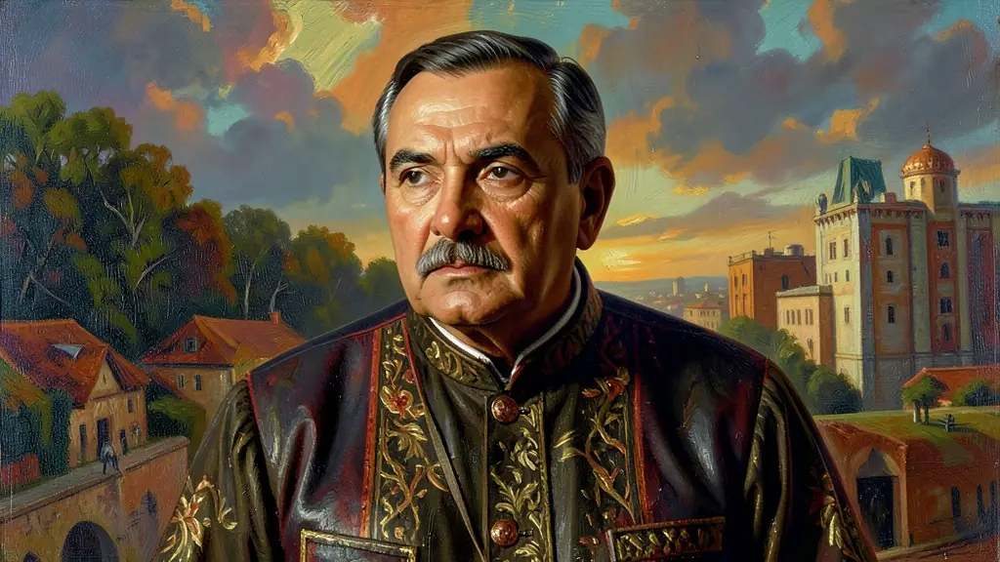
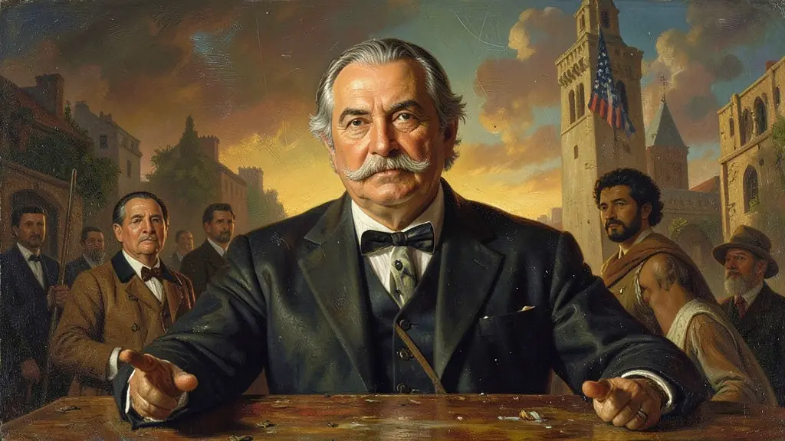
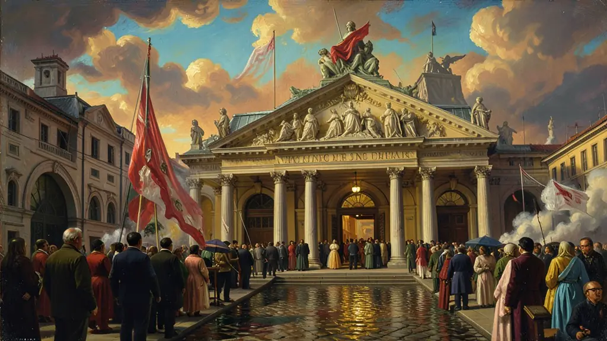

Capítulo 01
1. A Constituição de 1946: A Liberdade Reencontrada
Após 8 anos de ditadura varguista, o Brasil precisava de uma carta magna democrática. A Constituição de 46 garantiu o direito de greve, a liberdade de imprensa e o fim da censura. Ela foi escrita por parlamentares eleitos de diversos partidos (UDN, PSD, PTB), refletindo um Brasil que queria se livrar do fantasma do autoritarismo, embora ainda fosse conservadora em temas como o voto analfabeto.

Capítulo 02
2. O Beijo na Mão do Gigante: Alinhamento aos EUA
Dutra foi o presidente mais 'americanófilo' de nossa história. Ele via nos Estados Unidos o modelo a ser seguido e o escudo contra o avanço do comunismo na América Latina. Essa submissão ideológica custou caro ao Brasil, que abriu as pernas para o capital estrangeiro sem exigir as contrapartidas industriais que Vargas sempre exigia. O Brasil virou o quintal de consumo das empresas americanas.

Capítulo 03
3. O Fim dos Dados: A Proibição dos Cassinos
Por trás do general durão, havia a influência religiosa de sua esposa, D. Carmela Dutra. Sob o argumento moralista de que o jogo destruía as famílias brasileiras, Dutra proibiu os cassinos por decreto em 1946. Grandes hotéis como o Copacabana Palace fecharam suas roletas, gerando desemprego em massa no setor de turismo e lazer, que nunca mais se recuperou totalmente dessa pancada moralista.

Capítulo 04
4. Plano SALTE: A Sigla das Boas Intenções
A ideia era genial: focar em Saúde, Alimentação, Transporte e Energia para dar um salto de crescimento. Mas o governo Dutra gastou o dinheiro que não tinha nas importações de luxo e o SALTE ficou no papel. Foi um fracasso de execução, mas serviu de lição para Juscelino Kubitschek, que anos depois provaria que o planejamento estatal precisava de metas e de financiamento real.
O governo de Eurico Gaspar Dutra (1946-1951) marcou a primeira experiência democrática pós-Estado Novo, em um contexto de início da Guerra Fria. Sob o alinhamento incondicional aos Estados Unidos, o governo rompeu relações diplomáticas com a União Soviética e colocou o PCB (Partido Comunista Brasileiro) na ilegalidade. Economicamente, Dutra adotou inicialmente uma política liberal de queima de reservas em moeda estrangeira (acumuladas durante a Segunda Guerra), o que resultou em inflação e o posterior retorno a medidas de controle cambial.
O Plano SALTE (Saúde, Alimentação, Transporte e Energia) foi a principal tentativa de coordenação econômica do período, embora tenha tido pouco sucesso prático devido à falta de investimentos. A promulgação da Constituição de 1946 reestabeleceu as liberdades civis e a divisão dos três poderes, mas manteve a proibição de greves em setores 'fundamentais', refletindo o caráter conservador da elite política que sucedeu Vargas. Foi um período de tensões entre o desejo de modernização e a manutenção de estruturas sociais tradicionais.
Compreender o governo Dutra é essencial para analisar a transição entre as ditaduras de Vargas e o período de estabilidade democrática que viria com JK. O Enem frequentemente cobra a mudança na política econômica — do estatismo de Vargas para o liberalismo de Dutra — e as consequências sociais dessa abertura para os trabalhadores. Este período revela como a política interna brasileira foi profundamente influenciada pelo cenário geopolítico mundial após a Segunda Guerra Mundial.
Fonte: SKIDMORE, Thomas. Brasil: de Castelo a Tancredo. Rio de Janeiro: Paz e Terra, 2003.
Atividades interativas
Questões para fixar
Durante o governo de Eurico Gaspar Dutra (1946-1951), o Brasil adotou uma postura externa marcante em relação à Guerra Fria. Qual foi ela?
Qual foi a principal consequência econômica da política de abertura de importações adotada por Dutra logo no início de seu mandato?